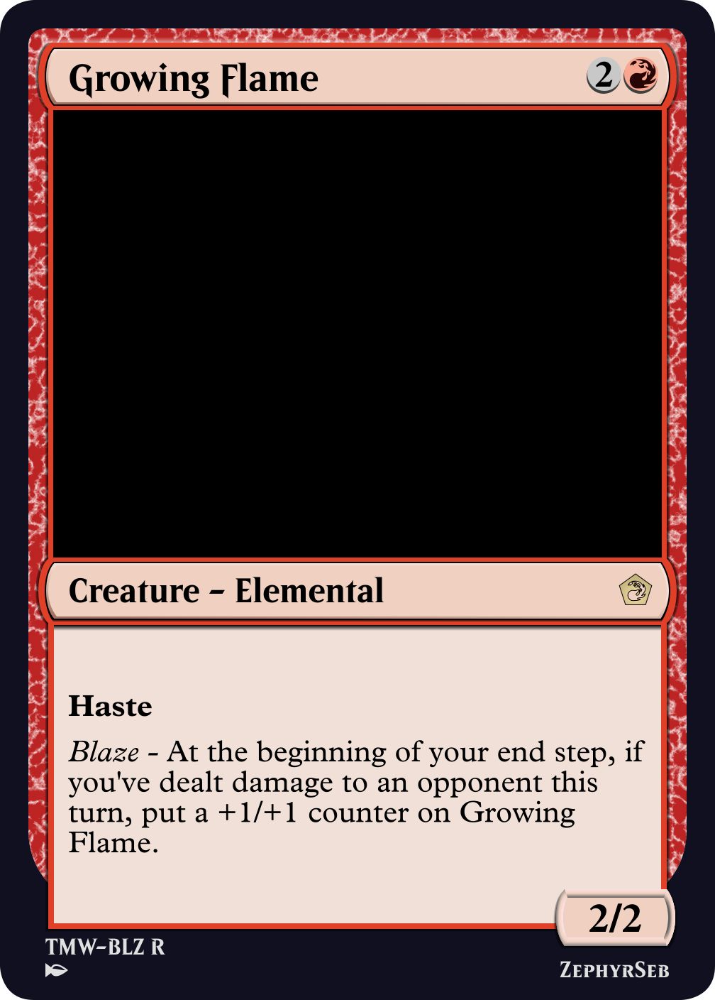
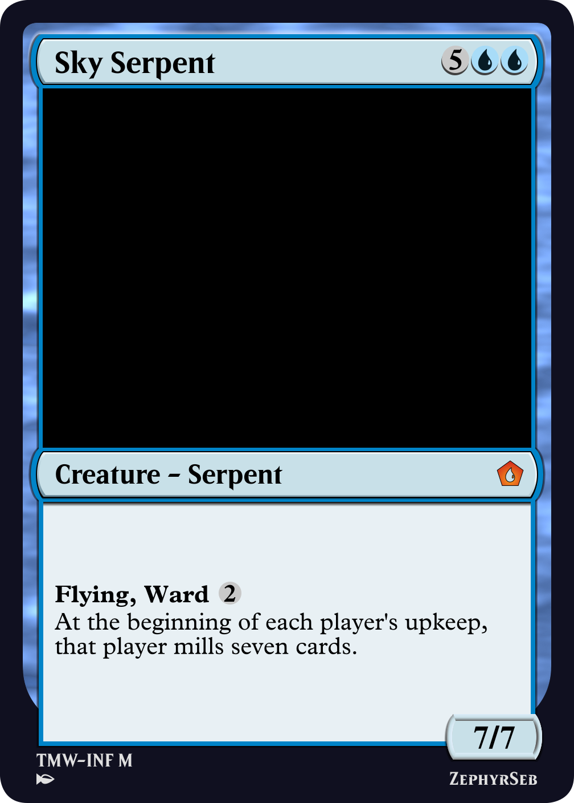
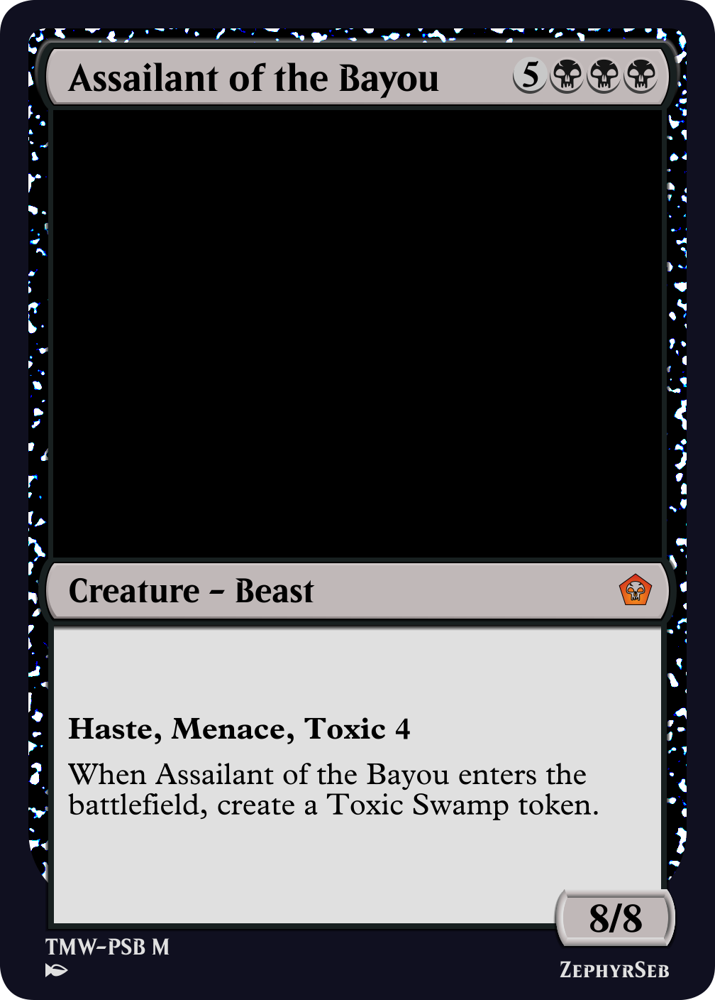
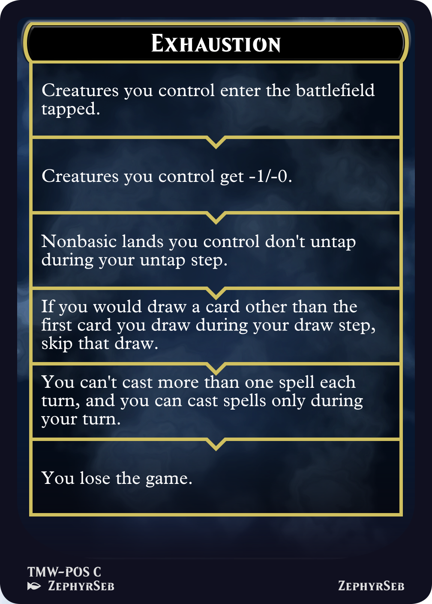
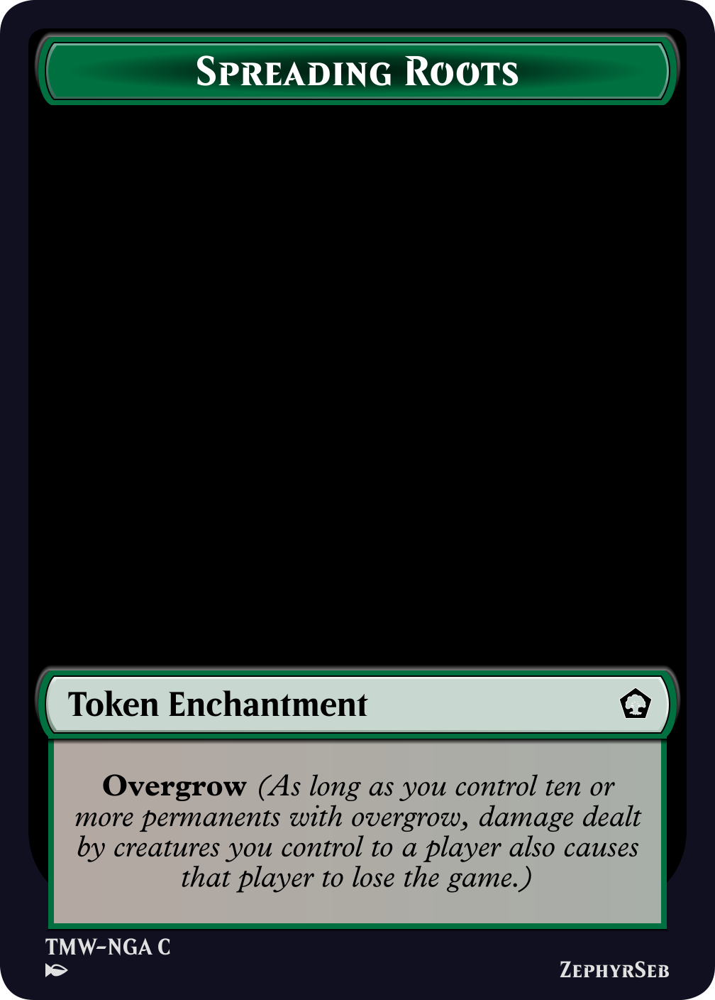
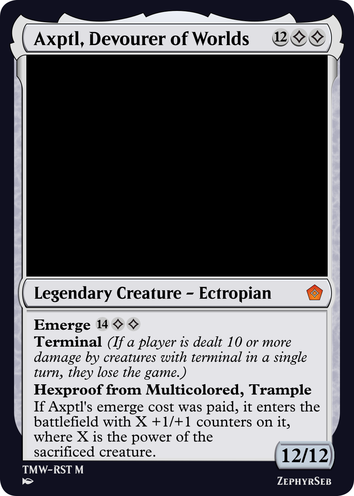
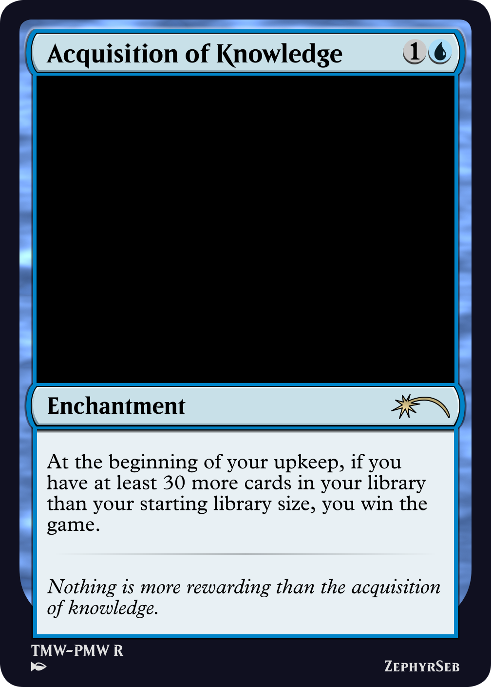
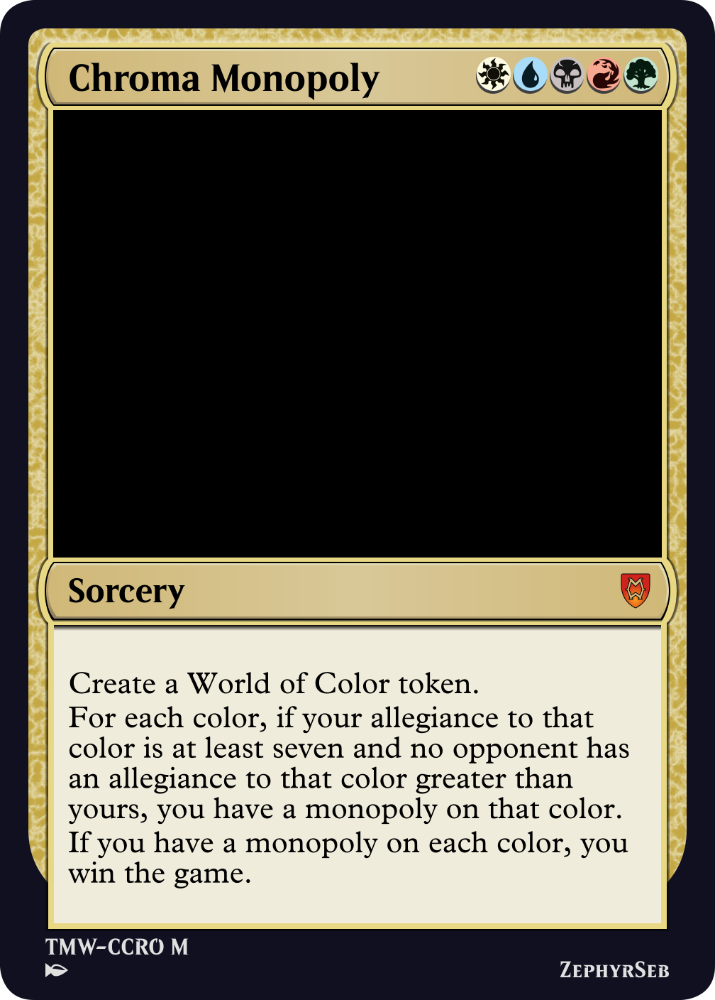

The latest set release is in fact an anthology of 'deadly' worlds, so named due to their nature as red herrings for the party in the Many Worlds D&D campaign. They were never meant to be visited, simply as they tend to kill their inhabitants. But this leads to an interesting mechanical question in Magic; how do you represent this level of deadliness? More precisely, how can you win the game in a unique way, or how can you make the opponent lose? Each mini set has its own lose condition it focuses on, which I will talk about in today's article.

Growing Flame
First of all, the most straightforward lose condition: being reduced to 0 life. There is one color that does this better than the others, red. That doesn't stop us from getting creative with it though. Everyone who's played magic is familiar with mono-red aggro, there are other red strategies that are more often overlooked, in particular burn. The Blazing Inferno, the red-aligned world, is very good at setting things on fire, which seems very fitting for burn. Burn often struggles with a lack of board presence, which can make it very uninteractive, but also if it draws badly, simply causes the deck to do nothing. To enable burn, the mechanic I'd like to highlight is a new activated ability burst, which allows you to discard a creature card to fling it at any target, using the power printed on the card.

Sky Serpent
Our second lose condition is another baked into the core rules of the game; causing an opponent to draw from an empty library. This sits at home in blue, which is represented by the Infinite Ravine. Once again, mill has a lot of similarities to burn, but due to the size of a library, tends to be slightly slower. Thanks to this, many mill cards or pay-offs are tied to creatures, or the endless winds world enchantment that encourages you to play a more creature-focused game, compared to traditional mill control strategies.

Assailant of the Bayou
In magic, there is one more alternate lose condition that shows up occasionally: poison. Representing the toxins that are secreted by the giant frogs that inhabit the Poisonous Swamp of Blagghrt (the name was intentionally weird as the party had to decode it from morse code), poison, and in particular, the toxic keyword, fit right at home in black. A player loses once they have 10 or more poison counters, so a single poison counter is twice as effective as 1 damage. In this set, the corrupted ability word also returns from Phyrexia: All Will be One, to reward you for getting your opponent up to three poison counters, allowing for damage or poison to be viable win conditions.

Exhaustion Emblem
Our first new lose condition comes from the Palace of Silence, a place where spirits gather, and anyone unlucky enough to find themselves there wears away until they join those spirits. Exhaustion is modeled on the Dungeons & Dragons mechanic of the same name, granted in six levels that slowly debilitates the opponent until it kills them. Exhaustion is an emblem, and no effects in the game allow you to remove levels of exhaustion, making it a very dangerous mechanic. Even if you can't land all six levels of exhaustion needed, once the opponent reaches three or more, their capabilities for game actions begins to decrease, giving you a better chance to close out the game in some way.

Spreading Roots Token
In Nature's Garden, travellers who become trapped there are quickly swallowed up by nature's growth. This is represented by the overgrow keyword; a keyword that, once you have ten permanents with the keyword in play, causes any creature damage you deal to a player to be lethal. This is assisted by a number of cards that create a new token enchantment named Spreading Roots, which has overgrow, and is slightly more difficult to remove than a creature.

Axptl, Devourer of Worlds
Lastly, World's Rest, the graveyard of worlds, has been slowly overcome by cosmic monstrosities named ectropians. Some of these are unfathomably large and one hit will spell doom. This is represented by a new keyword, terminal. As long as a player has been dealt 10 or more damage in a single turn by sources with terminal, they lose the game. The sources don't need to belong to the same player, nor does it need to be a single source, though cards like Axptl, Devourer of Worlds, are likely to end someone in a single attack.


Acquisition of Knowledge and Chroma Monopoly
Honorable mentions go to acquisition of knowledge and chroma monopoly, both cards that offer an alternate win condition if you can set up the game state in your favor.
With all these alternate win and lose conditions, I'm looking forward to playing 1000 life commander - you can check out the rules and ban list here.
So until next time, may you win your games in the way you want.
ZephyrSeb